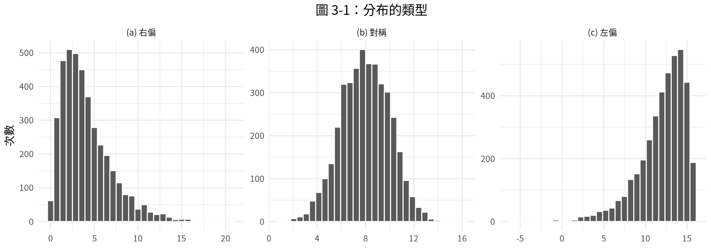
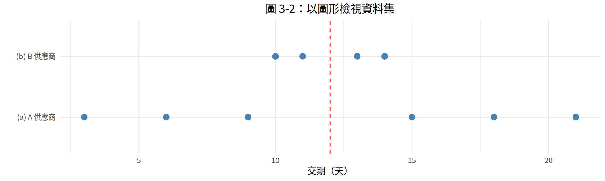
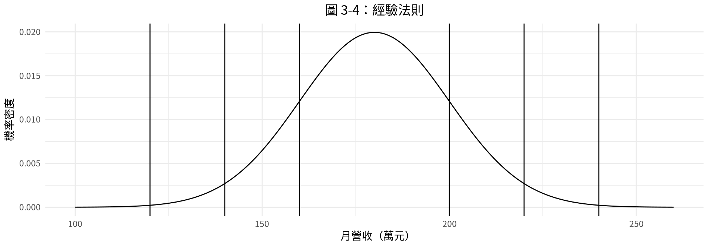
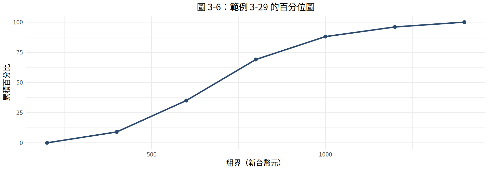
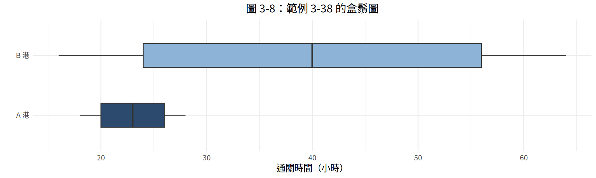

[1] 34.2[1] 3.8第3章：資料描述
實踐大學
2026-09-20
第3章介紹用來彙總資料的統計方法——平均量數、離散量數與位置量數。
| 節次 | 主題 |
|---|---|
| 3-1 | 集中趨勢量數：平均數、中位數、眾數、中程數、加權平均數、分布形狀 |
| 3-2 | 離散量數：全距、變異數、標準差、變異係數、全距經驗法則、柴比雪夫定理、經驗法則、資料的線性轉換 |
| 3-3 | 位置量數：標準分數、百分位數、十分位數、四分位數、離群值 |
| 3-4 | 探索性資料分析：五數綜合與盒鬚圖 |
讀完本章後，你應該能夠
寬鬆地說，平均指的是分布的中心，或是最典型的情形。平均量數也稱為集中趨勢量數，包括平均數、中位數、眾數與中程數。
統計量與母數
一般四捨五入規則
在算出最後答案之前不要先四捨五入。在中間步驟四捨五入，往往會擴大計算結果與精確值之間的差距。
平均數又稱算術平均，是把所有資料值相加後，再除以資料值的總個數。
平均數
平均數是所有數值的總和除以數值的總個數。
樣本平均數以 \bar{X} 表示，是一個統計量： \bar{X} = \frac{X_1 + X_2 + \cdots + X_n}{n} = \frac{\Sigma X}{n}
母體平均數以 \mu 表示，是一個母數： \mu = \frac{X_1 + X_2 + \cdots + X_N}{N} = \frac{\Sigma X}{N}
平均數的四捨五入規則
平均數應比原始資料多保留一位小數。若原始資料為整數，平均數取到小數第一位；若資料到小數第一位，平均數取到小數第二位。
希臘字母代表母數，羅馬字母代表統計量。除非另有說明，都假設資料來自樣本。
咖啡連鎖店的月營收
下列為某咖啡連鎖店九家門市上個月的營收（單位：新台幣百萬元）。求其平均數。
2.8 3.5 4.1 2.6 5.0 3.9 4.4 3.2 4.7（模擬資料）
貿易公司的出口金額
下列資料為某小型貿易公司五年間的年出口金額（單位：新台幣百萬元）。求其平均數。
486 512 545 578 614（模擬資料）
分組資料求平均數的程序，假設每一組中所有原始資料值的平均等於該組的組中點。
程序——求分組資料的平均數
\bar{X} = \frac{\Sigma f \cdot X_m}{n}
夜市攤位的營業額
下列次數分配為某夜市 25 個攤位上個月的營業額（單位：新台幣萬元）。求其平均數。
組界 次數
9.5-14.5 8
14.5-19.5 7
19.5-24.5 5
24.5-29.5 3
29.5-34.5 2
合計 25（模擬資料）
回到範例 3-9
解題
準備資料
| Class | f | Xm | fXm |
|---|---|---|---|
| 9.5-14.5 | 8 | 12 | 96 |
| 14.5-19.5 | 7 | 17 | 119 |
| 19.5-24.5 | 5 | 22 | 110 |
| 24.5-29.5 | 3 | 27 | 81 |
| 29.5-34.5 | 2 | 32 | 64 |
某篇報導指出大學教授的所得中位數為 82,974 美元：受訪教授中有一半所得高於此數，另一半低於此數。
資料陣列與中位數
當資料集由小到大排序後，稱為資料陣列。
中位數是資料陣列的中點，符號為 MD。
程序——求中位數
捷運站的進出人次
下列資料為七個捷運站平均每日的進出人次（單位：千人次）。求其中位數。
42 57 38 61 49 55 44（模擬資料）
貨櫃吞吐量
下列為某港口八季的貨櫃吞吐量（單位：千 TEU）。求其中位數。
146 133 171 119 154 126 162 140（模擬資料）
第三個平均量數是眾數，有時被稱為最典型的情形。
眾數
在資料集中出現次數最多的值稱為眾數。
注意
當沒有任何值出現超過一次時，不要說眾數是 0。這樣說是錯的，因為在某些資料（例如溫度）中，0 可能是真實存在的數值。
外送平台的配送時間
下列為隨機抽出的七筆外送訂單的配送時間（單位：分鐘）。求其眾數。
32 28 35 28 41 37 26（模擬資料）
值班揀貨人數
下列資料為某物流中心 15 天內每日的值班揀貨人數。求其眾數。
18 18 18 18 18
21 23 23 23 24
23 25 26 25 23（模擬資料）
旅館評分
下列資料為訂房平台上 8 家商務旅館的顧客平均評分。求其眾數。
4.3 3.8 4.6 3.5 4.1 3.9 4.8 4.2（模擬資料）
眾數組
分組資料的眾數即眾數組——次數最大的那一組。
夜市攤位的營業額
求範例 3-3中夜市攤位營業額次數分配的眾數組。
當資料為名目或類別尺度時，眾數是唯一可用來找出最典型情形的集中趨勢量數。
付款方式
下列資料為某網路商店某一天顧客所選擇的付款方式。求其眾數。
付款方式 筆數
信用卡 214
行動支付 168
現金 95
購物金 32
銀行轉帳 11（模擬資料）
解題
求解
| Method | Number |
|---|---|
| Credit card | 214 |
| Mobile payment | 168 |
| Cash | 95 |
| Store credit | 32 |
| Bank transfer | 11 |
[1] "Credit card"由於信用卡這一類的次數 214 最大，最典型的付款方式為信用卡。
資料集中極高或極低的資料值會對平均數造成顯著影響，這些極端值稱為離群值。辨識離群值的方法見第 3-3 節。
貿易公司的薪資
某小型貿易公司由老闆、經理、一位業務與兩位助理組成，每月薪資（新台幣）如下。（假設這就是全部母體。）求其平均數、中位數與眾數。
職稱 薪資
老闆 180,000
經理 72,000
業務 48,000
助理 35,000
助理 35,000（模擬資料）
解題
詮釋
平均數遠高於中位數與眾數，因為老闆極高的薪資把平均數往上拉。在這類情況下，應該改用中位數作為集中趨勢量數。
中程數
中程數定義為資料集中最小值與最大值之和除以 2，符號為 MR。
MR = \frac{\text{最小值} + \text{最大值}}{2}
中程數是對平均非常粗略的估計，且容易受到單一極高或極低值的影響。
航班取消數
下列為某航空公司五個月各自的航班取消數。求其中程數。
6 41 97 112 58（模擬資料）
貨櫃裝載量
下列為某出口碼頭五年間各年的貨櫃裝載量（單位：千櫃）。求其中程數。
318 742 906 455 264（模擬資料）
有時資料集中各個數值的代表性並不相同，此時須求加權平均數。
加權平均數
求變數 X 的加權平均數時，將每個數值乘上其對應的權數，再把乘積之和除以權數之和。
\bar{X} = \frac{w_1 X_1 + w_2 X_2 + \cdots + w_n X_n}{w_1 + w_2 + \cdots + w_n} = \frac{\Sigma wX}{\Sigma w}
其中 w_1, w_2, \ldots, w_n 為權數，X_1, X_2, \ldots, X_n 為數值。
學期平均成績
某位 ETP 學生的成績為：國際貿易實務（4 學分）A、商用統計學（3 學分）B、管理會計（3 學分）C、商務英語簡報（2 學分）B。若 A = 4 個積點、B = 3、C = 2、D = 1、F = 0，求該生的學期平均成績。
解題
求解
| Course | Credits | Grade |
|---|---|---|
| International Trade Practice | 4 | 4 |
| Business Statistics | 3 | 3 |
| Managerial Accounting | 3 | 2 |
| Business English Presentation | 2 | 3 |
[1] 3.1\bar{X} = \frac{\Sigma wX}{\Sigma w} = \frac{4 \cdot 4 + 3 \cdot 3 + 3 \cdot 2 + 2 \cdot 3}{4+3+3+2} = \frac{37}{12} \approx 3.1
學期平均成績為 3.1。
| 量數 | 定義 | 符號 |
|---|---|---|
| 平均數 | 所有數值之和除以數值個數 | \mu, \bar{X} |
| 中位數 | 排序後資料集的中間點 | MD |
| 眾數 | 出現次數最多的資料值 | 無 |
| 中程數 | 最小值加最大值除以 2 | MR |
平均數
中位數
眾數
中程數
次數分配可以呈現許多形狀，最重要的三種是右偏、對稱與左偏（圖 3-1）。
三種分布形狀
美國的所得分布是右偏的：多數所得集中在低端，少數高所得在右側形成尾巴。若大多數學生考試成績很高，分數的分布就是左偏。
注意
當分布極度偏斜時，平均數會被拉向尾巴，因此中位數比平均數更適合作為集中趨勢量數。極度偏斜的分布也會影響其他統計量。
繪製圖形
set.seed(2026)
shapes <- tibble(
value = c(rgamma(4000, 2, 0.5), rnorm(4000, 8, 2),
16 - rgamma(4000, 2, 0.5)),
shape = rep(c("(a) 右偏", "(b) 對稱",
"(c) 左偏"), each = 4000))
p_shapes <- ggplot(shapes, aes(x = value)) +
geom_histogram(bins = 30, fill = "steelblue", color = "white") +
facet_wrap(~ shape, scales = "free") +
labs(title = "圖 3-1：分布的類型", x = "", y = "次數")輸出圖形

在偏斜的兩張圖中，平均數被拉向長尾，而中位數仍停留在資料密集之處。
只知道資料集的平均數並不足以完整描述資料。鞋店老闆即使知道男鞋的平均尺碼是 10 號，如果只進 10 號鞋，生意也做不久。
除了平均之外，還必須知道資料值的分散情形。決定資料值分散程度的量數稱為離散量數：全距、變異數與標準差。
解題
求解
sum mean
72 12 sum mean
72 12 \mu_A = \frac{72}{6} = 12 \text{ 天} \qquad \mu_B = \frac{72}{6} = 12 \text{ 天}
兩者的平均數都是 12 天。
解題
輸出圖形

雖然兩者平均數相同，分散程度卻差很多：B 供應商的交期穩定得多。
全距
全距是最大值減最小值，符號為 R。
R = \text{最大值} - \text{最小值}
全距必須寫成單一個數字。
兩家供應商的比較
求範例 3-15中兩家供應商交期的全距。
包裹處理量
下列為某物流中心六個月的包裹處理量（單位：萬件）。求其全距。
37 62 19 48 55 41（模擬資料）
資料的變異來自每個資料值與平均數之間的距離，此距離稱為離差 X - \mu。由於離差之和恆為零，因此將離差平方。
母體變異數與標準差
母體變異數是各數值與平均數距離平方的平均：
\sigma^2 = \frac{\Sigma(X - \mu)^2}{N}
母體標準差是變異數的平方根：
\sigma = \sqrt{\sigma^2} = \sqrt{\frac{\Sigma(X - \mu)^2}{N}}
其中 X 為個別數值，\mu 為母體平均數，N 為母體大小。
程序——母體變異數與標準差
標準差的四捨五入規則
最後答案應比原始資料多保留一位小數。
兩家供應商的比較
求範例 3-15中 A 供應商交期的變異數與標準差。A 供應商的交期（天）為
9 21 3 15 6 18兩家供應商的比較
求範例 3-15中 B 供應商交期的變異數與標準差。B 供應商的交期（天）為
14 10 13 11 14 10除以 n 通常會低估母體變異數，因此改為除以 n - 1，得到略大的數值，成為母體變異數的不偏估計。
樣本變異數與標準差
s^2 = \frac{\Sigma(X - \bar{X})^2}{n - 1} \qquad s = \sqrt{s^2} = \sqrt{\frac{\Sigma(X - \bar{X})^2}{n - 1}}
其中 X 為個別數值，\bar{X} 為樣本平均數，n 為樣本大小。
出口訂單數
s^2 與 s 的簡捷公式
s^2 = \frac{n(\Sigma X^2) - (\Sigma X)^2}{n(n-1)} \qquad s = \sqrt{\frac{n(\Sigma X^2) - (\Sigma X)^2}{n(n-1)}}
這些公式與前述公式在數學上等價，且不需用到平均數。注意 \Sigma X^2 與 (\Sigma X)^2 不同：\Sigma X^2 是先平方再求和，(\Sigma X)^2 是先求和再平方。
出口訂單數
解題
求解
[1] 160[1] 5840[1] 180[1] 180s^2 = \frac{5(5840) - 160^2}{5(4)} = \frac{3600}{20} = 180 \qquad s \approx 13.4
簡算公式的結果與 var() 相同，也與範例 3-20相同。
分組資料的簡捷公式
s^2 = \frac{n(\Sigma f \cdot X_m^2) - (\Sigma f \cdot X_m)^2}{n(n-1)} \qquad s = \sqrt{\frac{n(\Sigma f \cdot X_m^2) - (\Sigma f \cdot X_m)^2}{n(n-1)}}
其中 X_m 為各組組中點，f 為各組次數。
n 務必使用次數總和，而不是組數。
物流中心的揀貨時間
下列次數分配為隨機抽出的 20 筆訂單各自的揀貨時間（單位：分鐘）。求其樣本變異數與樣本標準差。
組界 次數 組中點
4.5-9.5 2 7
9.5-14.5 3 12
14.5-19.5 5 17
19.5-24.5 4 22
24.5-29.5 3 27
29.5-34.5 2 32
34.5-39.5 1 37（模擬資料）
解題
準備資料
| Class | f | Xm | fXm | fXm2 |
|---|---|---|---|---|
| 4.5-9.5 | 2 | 7 | 14 | 98 |
| 9.5-14.5 | 3 | 12 | 36 | 432 |
| 14.5-19.5 | 5 | 17 | 85 | 1445 |
| 19.5-24.5 | 4 | 22 | 88 | 1936 |
| 24.5-29.5 | 3 | 27 | 81 | 2187 |
| 29.5-34.5 | 2 | 32 | 64 | 2048 |
| 34.5-39.5 | 1 | 37 | 37 | 1369 |
解題
求解
n sum_fxm sum_fxm2
20 405 9515 [1] 69.1[1] 8.3s^2 = \frac{20(9515) - 405^2}{20(19)} = \frac{26{,}275}{380} \approx 69.1 \qquad s \approx 8.3
| 量數 | 定義 | 符號 |
|---|---|---|
| 全距 | 最大值與最小值之間的距離 | R |
| 變異數 | 各數值與平均數距離平方的平均 | \sigma^2, s^2 |
| 標準差 | 變異數的平方根 | \sigma, s |
四項用途
當兩個樣本的測量單位相同時，可以直接比較標準差。若要比較兩個不同變數的標準差，則須使用變異係數。
變異係數
變異係數以 \text{CVar} 表示，是標準差除以平均數，結果以百分比表示。
\text{CVar} = \frac{s}{\bar{X}} \cdot 100\% \quad \text{（樣本）} \qquad \text{CVar} = \frac{\sigma}{\mu} \cdot 100\% \quad \text{（母體）}
兩個城市的門市營收
某咖啡連鎖店台北門市的平均月營收為新台幣 268 萬元，標準差為 52.3 萬元；高雄門市的平均月營收為 194 萬元，標準差為 41.7 萬元。求兩地的變異係數。哪一組資料的變異較大？
（模擬資料）
解題
求解
| City | mean_sales | sd_sales | CVar |
|---|---|---|---|
| Taipei | 268 | 52.3 | 19.5 |
| Kaohsiung | 194 | 41.7 | 21.5 |
\text{台北：} \text{CVar} = \frac{52.3}{268} \cdot 100\% = 19.5\% \qquad \text{高雄：} \text{CVar} = \frac{41.7}{194} \cdot 100\% = 21.5\%
高雄門市的變異只比台北門市略大一些。（表中營收單位皆為新台幣萬元。）
旅館住房率與房價
某樣本中台北國際觀光旅館的平均住房率為 72.5%，變異數為 27.04；平均房價為新台幣 4,850 元，變異數為 336,400。比較兩組資料的變異程度。
（模擬資料）
解題
求解
| Variable | mean_value | variance | CVar |
|---|---|---|---|
| Occupancy rate | 72.5 | 27.04 | 7.2 |
| Daily room rate | 4850.0 | 336400.00 | 12.0 |
\text{住房率：} \text{CVar} = \frac{\sqrt{27.04}}{72.5} \cdot 100\% = 7.2\% \qquad \text{房價：} \text{CVar} = \frac{\sqrt{336{,}400}}{4850} \cdot 100\% = 12.0\%
房價的變異大於住房率的變異。
全距經驗法則
標準差的粗略估計為
s \approx \frac{\text{全距}}{4}
此法則也可用來估計極端值：最小值約為 \bar{X} - 2s，最大值約為 \bar{X} + 2s。
注意
全距經驗法則只是近似值，適用於資料值分布單峰且大致對稱的情況。
[1] 16[1] 3.7[1] 3[1] 8.5 23.5實際標準差為 3.7，全距為 22 - 10 = 12，因此全距經驗法則給出 s \approx 3。平均數為 16，估計的最小值與最大值為 8.5 與 23.5——與實際的 10 與 22 相去不遠。
柴比雪夫定理
資料集中落在平均數上下 k 個標準差之內的比例至少為 1 - \dfrac{1}{k^2}，其中 k 為大於 1 的數（k 不一定是整數）。
此定理可適用於任何分布，不論其形狀為何。
校園周邊租金
校園周邊套房的平均月租金為新台幣 12,000 元，標準差為 1,500 元。求至少 75% 的套房租金落在哪個區間。
（模擬資料）
每筆外送的油錢
某項調查發現外送員每筆訂單的平均油錢為新台幣 8.00 元，標準差為 1.20 元。利用柴比雪夫定理，求油錢落在 5.00 元到 11.00 元之間的訂單至少占多少百分比。
（模擬資料）
經驗法則
當分布呈鐘形（常態）時：
由於經驗法則要求分布近似鐘形，其結果比適用於所有分布的柴比雪夫定理更為精確。
繪製圖形
假設某超商連鎖店各門市的月營收呈鐘形分布，平均數為新台幣 180 萬元，標準差為 20 萬元（下圖單位為萬元）。
mean_revenue <- 180
sd_revenue <- 20
p_empirical <- tibble(
x = seq(mean_revenue - 4 * sd_revenue, mean_revenue + 4 * sd_revenue,
length.out = 500),
y = dnorm(x, mean_revenue, sd_revenue)) |>
ggplot(aes(x, y)) +
geom_line(color = "#2c4a6e") +
geom_vline(xintercept = mean_revenue + c(-1, 1) * sd_revenue,
color = "blue", linetype = 2) +
geom_vline(xintercept = mean_revenue + c(-2, 2) * sd_revenue,
color = "red", linetype = 2) +
geom_vline(xintercept = mean_revenue + c(-3, 3) * sd_revenue,
color = "darkgreen", linetype = 2) +
labs(title = "圖 3-4：經驗法則",
x = "月營收（萬元）", y = "機率密度")輸出圖形

約有 68% 的門市月營收落在 160 到 200 萬元之間，約 95% 落在 140 到 220 萬元之間，約 99.7% 落在 120 到 240 萬元之間。
有時必須把資料值轉換成另一種數值——例如把在加拿大收集的攝氏溫度換算成華氏，供美國的研究使用。這種改變稱為資料的線性轉換。
加上一個常數
當每個資料值都加上一個常數時，平均數增加該常數，而標準差不變。
乘以一個常數
當每個資料值都乘以一個常數時，新資料集的平均數等於該常數乘以原平均數，新資料集的標準差等於該常數的絕對值乘以原標準差。
假設某物流公司有五位兼職揀貨員，時薪分別為新台幣 200、185、215、185、215 元。某季獲利良好後，每位揀貨員的時薪都調升 20 元。
mean sd
200 15 mean sd
220 15 平均數從 200 元上升到 220 元——正好等於調升的金額——而標準差仍維持在 15。
這五位揀貨員上週分別工作 18、14、22、14、22 小時。假設薪資系統改以分鐘記錄工時，等於每個數值都乘以 60。
mean sd
18 4 mean sd
1080 240 平均數乘以 60，從 18 小時變成 1080 分鐘；標準差同樣乘以 60，從 4 變成 240。
除了集中趨勢量數與離散量數之外，還有位置量數。這些量數包括標準分數、百分位數、十分位數與四分位數，用來指出某個資料值在資料集中的相對位置。
若某個值位於第 80 百分位數，代表有 80% 的數值低於它、20% 的數值高於它。中位數就是對應第 50 百分位數的值。
音樂測驗得 90 分與英文測驗得 45 分無法直接比較，因為兩份試卷的題數或每題配分未必相同。但可以利用平均數與標準差，做相對標準的比較。
z 分數（標準分數）
某數值的 z 分數（標準分數）是把該數值減去平均數後，再除以標準差：
z = \frac{\text{數值} - \text{平均數}}{\text{標準差}}
z = \frac{X - \bar{X}}{s} \quad \text{（樣本）} \qquad z = \frac{X - \mu}{\sigma} \quad \text{（母體）}
z 分數代表某個資料值高於或低於平均數幾個標準差。若 z > 0 表示高於平均數；z = 0 表示等於平均數；z < 0 表示低於平均數。
客服通話時間
某客服中心台北據點的平均通話處理時間為 4.8 分鐘，標準差 0.6 分鐘；台中據點的平均為 5.4 分鐘，標準差 0.8 分鐘。台北有一通電話花了 6.3 分鐘，台中有一通花了 6.8 分鐘。比較這兩通電話的相對位置。
（模擬資料）
解題
求解
| Site | time | mean_time | sd_time | z |
|---|---|---|---|---|
| Taipei | 6.3 | 4.8 | 0.6 | 2.50 |
| Taichung | 6.8 | 5.4 | 0.8 | 1.75 |
\text{台北：} z = \frac{6.3 - 4.8}{0.6} = 2.50 \qquad \text{台中：} z = \frac{6.8 - 5.4}{0.8} = 1.75
由於台北那通電話的 z 分數較高，它在自己據點中的相對通話時間比台中那通更長。
超商門市的日營收
某超商連鎖店的 24 小時門市平均日營收為新台幣 52,000 元，標準差 5,000 元；校園門市平均日營收為 38,000 元，標準差 4,000 元。某家 24 小時門市當日營收 45,000 元，某家校園門市當日營收 33,000 元。求兩者的相對位置。
（模擬資料）
解題
求解
| Branch | revenue | mean_revenue | sd_revenue | z |
|---|---|---|---|---|
| 24-hour | 45000 | 52000 | 5000 | -1.40 |
| Campus | 33000 | 38000 | 4000 | -1.25 |
\text{24 小時門市：} z = \frac{45{,}000 - 52{,}000}{5{,}000} = -1.40 \qquad \text{校園門市：} z = \frac{33{,}000 - 38{,}000}{4{,}000} = -1.25
在這個例子中，校園門市在自己那一組中的相對位置高於 24 小時門市在自己那一組中的相對位置。
當某個變數的全部資料都轉換成 z 分數後，所得分布的平均數為 0、標準差為 1。
百分位數
百分位數把資料集分成 100 個相等的組，符號為 P_1, P_2, P_3, \ldots, P_{99}。
注意
百分位數不等於百分比。若某位學生在 100 題中答對 72 題，她的百分比分數是 72，但這並未說明她在班上的相對位置。若原始分數 72 對應第 64 百分位數，則她勝過班上 64% 的學生。
| 量尺分數 | 第一部分：聽力 | 第二部分：語法 | 第三部分：閱讀 | 總量尺分數 | 百分位等級 |
|---|---|---|---|---|---|
| 72 | 99 | 98 | 99 | 720 | 99 |
| 70 | 97 | 95 | 97 | 700 | 96 |
| 68 | 94 | 91 | 93 | 680 | 92 |
| 66 | 89 | 85 | 88 | 660 | 87 |
| 64 | 83 | 78 | 82 | 640 | 80 |
| 62 | 75 | 70 | 74 | 620 | 72 |
| 60 | 66 | 60 | 64 | 600 | 63 |
某商學院對新生施測的英文分班測驗所公布的百分位等級。（模擬資料）
| 量尺分數 | 第一部分：聽力 | 第二部分：語法 | 第三部分：閱讀 | 總量尺分數 | 百分位等級 |
|---|---|---|---|---|---|
| 58 | 56 | 50 | 54 | 580 | 53 |
| 56 | 45 | 40 | 43 | 560 | 42 |
| 54 | 35 | 31 | 33 | 540 | 32 |
| 52 | 26 | 23 | 25 | 520 | 24 |
| 50 | 19 | 17 | 18 | 500 | 17 |
| 48 | 13 | 12 | 13 | 480 | 12 |
| 46 | 9 | 8 | 9 | 460 | 8 |
| 44 | 6 | 5 | 6 | 440 | 5 |
| 量尺分數 | 第一部分：聽力 | 第二部分：語法 | 第三部分：閱讀 | 總量尺分數 | 百分位等級 |
|---|---|---|---|---|---|
| 42 | 4 | 3 | 4 | 420 | 3 |
| 40 | 2 | 2 | 2 | 400 | 2 |
| 38 | 1 | 1 | 1 | 380 | 1 |
| 36 | 1 | 1 | 1 | 360 | 1 |
| 34 | 1 | 1 | 1 | 340 | 1 |
| 平均數 | 58.4 | 59.1 | 58.7 | 588 | |
| 標準差 | 6.2 | 6.8 | 6.5 | 62 |
第一部分量尺分數 64 的學生，百分位等級為 83——代表他勝過 83% 參加第一部分測驗的學生。
電商平台的訂單金額
下列次數分配為隨機抽出的 200 筆電商平台訂單的金額（單位：新台幣元）。請繪製百分位圖。
組界 次數
199.5-399.5 18
399.5-599.5 52
599.5-799.5 68
799.5-999.5 38
999.5-1199.5 16
1199.5-1399.5 8
合計 200（模擬資料）
解題
準備資料
\text{累積百分比} = \frac{\text{累積次數}}{n} \cdot 100
order_values <- tibble(
Class = c("199.5-399.5", "399.5-599.5", "599.5-799.5",
"799.5-999.5", "999.5-1199.5", "1199.5-1399.5"),
upper = c(399.5, 599.5, 799.5, 999.5, 1199.5, 1399.5),
f = c(18, 52, 68, 38, 16, 8)) |>
mutate(cum_f = cumsum(f), cum_pct = cum_f / sum(f) * 100)
knitr::kable(order_values, align = "c")| Class | upper | f | cum_f | cum_pct |
|---|---|---|---|---|
| 199.5-399.5 | 399.5 | 18 | 18 | 9 |
| 399.5-599.5 | 599.5 | 52 | 70 | 35 |
| 599.5-799.5 | 799.5 | 68 | 138 | 69 |
| 799.5-999.5 | 999.5 | 38 | 176 | 88 |
| 999.5-1199.5 | 1199.5 | 16 | 192 | 96 |
| 1199.5-1399.5 | 1399.5 | 8 | 200 | 100 |
解題
輸出圖形

從圖上可讀出：訂單金額 799.50 元位在第 69 百分位數，而第 50 百分位數落在 599.50 元與 799.50 元之間。
百分位數公式
某數值 X 所對應的百分位數為
\text{百分位數} = \frac{(\text{小於 } X \text{ 的數值個數}) + 0.5}{\text{數值總個數}} \cdot 100
解題
求解
[1] 9 12 14 18 21 23 25 27 31 35[1] 35由於小於 18 的資料值有 3 個，
\text{百分位數} = \frac{3 + 0.5}{10} \cdot 100 = \text{第 35 百分位數}
因此 18 這個值高於 35% 的資料值。
退貨處理筆數
利用範例 3-30的資料，求 31 的百分位等級。
程序——求給定百分位數所對應的資料值
退貨處理筆數
利用範例 3-30的資料，求對應第 65 百分位數的數值。
退貨處理筆數
利用範例 3-30的資料，求對應第 30 百分位數的資料值。
四分位數與十分位數
四分位數把分布分成四個相等的組，以 Q_1、Q_2、Q_3 表示。 十分位數把分布分成 10 組，以 D_1, D_2, \ldots, D_9 表示。
程序——求 Q_1、Q_2 與 Q_3
外送員的每小時送單數
解題
求解
[1] 19 22 22 24 25 26 27 27 31Q1 Q2 Q3
22 25 27 25% 50% 75%
22 25 27 Q_2 = 25 \qquad Q_1 = \frac{22 + 22}{2} = 22 \qquad Q_3 = \frac{27 + 27}{2} = 27
因此 Q_1 = 22、Q_2 = 25、Q_3 = 27。內建的 quantile() 給出相同的三個值，所以本章其餘部分直接使用 quantile()。
四分位距
四分位距（IQR）是第三四分位數與第一四分位數之差。
\text{IQR} = Q_3 - Q_1
四分位數也可作為粗略的離散量數：四分位距是中間 50% 資料值的全距。與標準差相同，資料集越分散，四分位距越大。
外送員的每小時送單數
求範例 3-34資料的四分位距。
| 量數 | 定義 | 符號 |
|---|---|---|
| 標準分數或 z 分數 | 資料值高於或低於平均數幾個標準差 | z |
| 百分位數 | 資料值在分布中以百分之一為單位的位置 | P_n |
| 十分位數 | 資料值在分布中以十分之一為單位的位置 | D_n |
| 四分位數 | 資料值在分布中以四分之一為單位的位置 | Q_n |
離群值
離群值是與其他資料值相比極高或極低的資料值。
穩健與非穩健統計量
平均數與標準差會受離群值影響，因此稱為非穩健統計量；中位數與四分位距受離群值的影響較小，因此稱為穩健統計量。
辨識離群值的程序
注意
對於離群值該如何處理，並沒有一成不變的規則，統計學家對辨識方法也未完全一致。當分布為常態或鐘形時，超出平均數上下 3 個標準差的資料值可視為可疑的離群值。
客訴工單數
下列為某客服團隊隨機抽出的 8 天內每日收到的客訴工單數。請檢查是否有離群值。
8 4 18 12 57 8 14 18（模擬資料）
解題
求解
25% 75%
8 18 [1] 1025% 75%
-7 33 [1] 57此處 Q_1 = 8、Q_3 = 18、\text{IQR} = 10，1.5(10) = 15，因此界線為 -7 與 33。資料值 57 大於 33，可視為離群值。
傳統分析的目的是確認對資料性質的各種推測；探索性資料分析的目的則是檢視資料，看看能從中發現什麼資訊，例如中心與分散程度。
探索性資料分析（EDA）
在探索性資料分析（EDA）中，資料可用莖葉圖整理。EDA 使用的集中趨勢量數是中位數，使用的離散量數是四分位距 Q_3 - Q_1，而資料以盒鬚圖（又稱箱形圖）呈現。
EDA 由 John Tukey 發展，並發表於他的著作 Exploratory Data Analysis（Addison-Wesley, 1977）。
五數綜合
盒鬚圖牽涉五個特定數值，合稱資料集的五數綜合：
盒鬚圖
盒鬚圖是這樣繪製的資料集圖形：從最小值畫一條水平線到 Q_1，從 Q_3 畫一條水平線到最大值，並畫一個左右兩邊分別通過 Q_1 與 Q_3 的盒子，盒內以一條垂直線通過中位數（即 Q_2）。
程序——繪製盒鬚圖
手搖飲攤位的日營收
下列為某手搖飲攤位隨機抽出的 10 天日營收（單位：新台幣千元）。請繪製盒鬚圖。
14 9 26 6 16 12 8 20 16 9（模擬資料）
解讀盒鬚圖
兩個港口的通關時間
下列資料為兩個港口各抽出一批出口貨物的通關時間（單位：小時）。請用盒鬚圖比較兩者的分布。
A 港 B 港
22 26 20 18 32 56 24 16
24 28 20 26 48 64 56 24（模擬資料）
解題
輸出圖形

B 港通關時間的中位數高出許多，其四分位距與全距也都比 A 港大得多。
注意
在探索性資料分析中，繪製盒鬚圖用的是樞紐值（hinges）而非四分位數。當資料值個數為偶數時，樞紐值與四分位數相同；資料值個數為奇數時兩者略有差異。由於多數計算機與電腦程式使用四分位數，本書也採用四分位數。
也可以繪製修正盒鬚圖來檢查離群值：鬚只延伸到盒子外 1.5(\text{IQR}) 範圍內的最大值與最小值。
| 傳統方法 | 探索性資料分析 |
|---|---|
| 次數分配 | 莖葉圖 |
| 直方圖 | 盒鬚圖 |
| 平均數 | 中位數 |
| 標準差 | 四分位距 |
第3章詞彙
雙峰 · 盒鬚圖 · 柴比雪夫定理 · 變異係數 · 資料陣列 · 十分位數 · 經驗法則 · 探索性資料分析（EDA） · 五數綜合 · 四分位距（IQR） · 平均數 · 中位數 · 中程數 · 眾數組 · 眾數 · 多峰 · 左偏（負偏）分布 · 非穩健統計量 · 離群值 · 母數 · 百分位數 · 母體平均數 · 母體標準差 · 母體變異數 · 右偏（正偏）分布 · 四分位數 · 全距 · 全距經驗法則 · 穩健統計量 · 樣本平均數 · 標準差 · 統計量 · 對稱分布 · 單峰 · 變異數 · 加權平均數 · z 分數或標準分數
集中趨勢
\bar{X} = \frac{\Sigma X}{n} \qquad \mu = \frac{\Sigma X}{N} \qquad \bar{X} = \frac{\Sigma f \cdot X_m}{n}
\bar{X} = \frac{\Sigma wX}{\Sigma w} \qquad MR = \frac{\text{最小值} + \text{最大值}}{2}
離散程度
R = \text{最大值} - \text{最小值} \qquad \sigma^2 = \frac{\Sigma(X-\mu)^2}{N} \qquad \sigma = \sqrt{\frac{\Sigma(X-\mu)^2}{N}}
s^2 = \frac{n(\Sigma X^2) - (\Sigma X)^2}{n(n-1)} \qquad s^2 = \frac{n(\Sigma f \cdot X_m^2) - (\Sigma f \cdot X_m)^2}{n(n-1)}
\text{CVar} = \frac{s}{\bar{X}} \cdot 100 \qquad s \approx \frac{\text{全距}}{4} \qquad 1 - \frac{1}{k^2}
位置
z = \frac{X - \bar{X}}{s} \qquad z = \frac{X - \mu}{\sigma}
\text{累積百分比} = \frac{\text{累積次數}}{n} \cdot 100
\text{百分位數} = \frac{(\text{小於 } X \text{ 的數值個數}) + 0.5}{\text{數值總個數}} \cdot 100
c = \frac{n \cdot p}{100} \qquad \text{IQR} = Q_3 - Q_1
重點
Copyright notice. These teaching materials follow the organization and terminology of Bluman, A. G. (2023). Elementary statistics: A step by step approach (11th ed.). McGraw Hill. All rights in the original work are reserved by its authors and publishers.
Original examples. Every worked example, data set, and R script in these slides was written for this course. The data are hypothetical unless stated otherwise.
Non-commercial use only. These materials are strictly intended for educational purposes and must not be used for commercial gain or profit.
Proper attribution. Any reproduction, distribution, or use of these materials must provide proper attribution to the original source.

Elementary Statistics: A Step by Step Approach